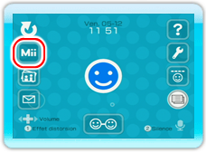
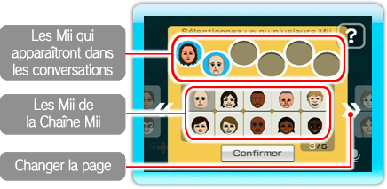

Des Mii peuvent vous représenter dans le salon de conversation et à l’accueil.

Dans le salon de conversation ou à l’accueil, sélectionnez
.
Tous les Mii enregistrés dans la Chaîne Mii de votre console seront affichés à l’écran.
Faites votre sélection parmi l’ensemble de Mii disponibles dans la Chaîne Mii.

Note: Chaque utilisateur peut choisir d’afficher jusqu’à 6 Mii sur sa console Wii pour les faire participer aux conversations.
Pour retirer un Mii de la sélection des Mii qui apparaissent dans les conversations, vous n’avez qu’à le pointer, puis à appuyer sur
.
Lorsque vous avez fait votre choix, sélectionnez Confirmer. À partir de ce moment-là,
les Mii que vous avez choisis dans cet écran apparaîtront dans le salon de conversation et à l’accueil chaque fois que vous utiliserez la chaîne,
mais vous pourrez modifier votre sélection à tout moment.
Note: Si aucun Mii n’est enregistré dans la Chaîne Mii de votre console ou si vous n’avez sélectionné aucun Mii,
vous représentera dans les conversations. Si vous préférez ne pas afficher de Mii et être représenté(e) par
dans les conversations, vous pouvez à tout moment annuler votre sélection de Mii en sélectionnant
dans le salon de conversation ou à l’accueil. Pour plus d’informations sur la création de Mii,
veuillez lire la section sur la Chaîne Mii dans le Mode d’emploi de la Wii – Chaînes et paramètres.